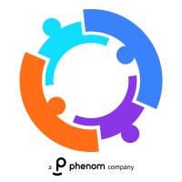

Holland America Line
Data Scientist, Targeted Marketing
February 2025 — Ongoing
I use data to make complex questions clearer, uncover patterns, and turn uncertainty into something you can act on.
My work spans data science and analytics—from experimentation and statistical analysis to machine learning, visualization, and storytelling.
Career
Data Scientist, Targeted Marketing
February 2025 — Ongoing
Data Scientist
December 2023 — June 2024

Data Science Intern
June 2023 — January 2024
Inorganic Chemistry Analyst
July 2019 — June 2022